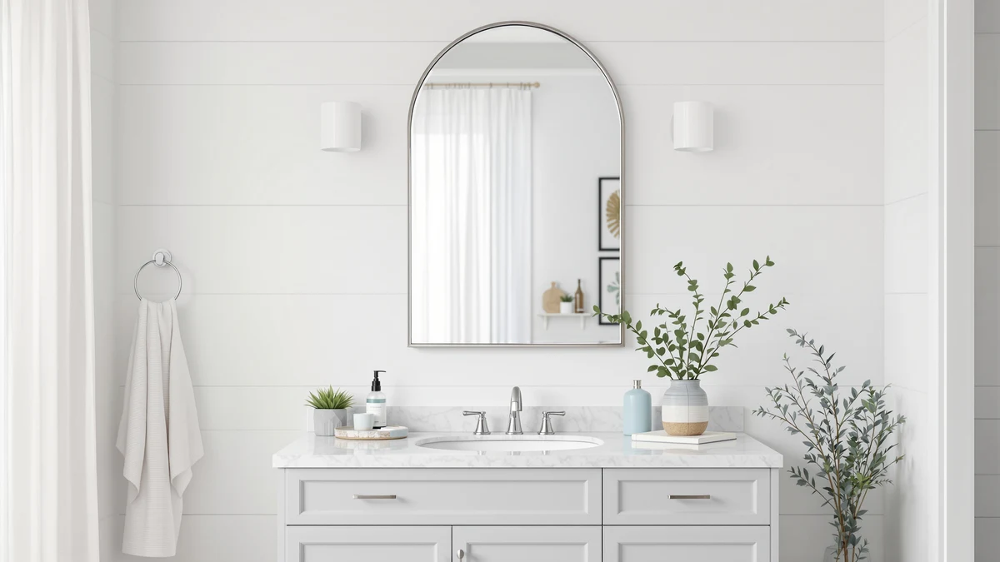

Quick Answer
The ANDY STAR Arched Mirror 20 is a solid pick if you want the arched-frame look in a compact 30 by 20 inch size and your bathroom already has decent lighting near the sink. At $149.99 it costs $10 to $36 more than the three alternatives in this comparison, so it earns its place mainly on frame quality and that arch shape rather than price or features. If lighting or budget matters more to you than the frame's look, the picks below are worth a closer look first.
Our pick: ANDY STAR Arched Mirror 20, $149.99 Check Price on Amazon
Bottom line: our top pick is the ANDY STAR Arched Mirror at $149.99.
Things to Know Before You Buy
- Arched mirrors read as a single statement piece on a wall, so measure first. The ANDY STAR's 20 inch width suits a single vanity, while the 40 inch LOAAO and Hivone below fit a double sink better.
- Tempered glass and an aluminum frame resist the moisture and steam damage that warps wood-framed mirrors over several years, which matters more in a bathroom than in almost any other room.
- None of the four mirrors in this comparison list a published star rating or review count in the current product data, so pull up the live Amazon listing and check those numbers before you order.
- If your vanity doesn't already have a sconce or overhead fixture, an LED-framed mirror like the Olyvren or Hivone solves that gap without the cost of adding a separate light.
- Confirm what mounting hardware comes in the box before you order. Most listings in this price range sell wall anchors and brackets separately, and an arched frame can need different anchor spacing than a standard rectangle.
This andy star arched mirror review looks at the ANDY STAR Arched Mirror 20 next to three similarly priced bathroom mirrors to work out whether its curved aluminum frame justifies a $149.99 price tag. Arched mirrors have become one of the most requested shapes for single-sink vanities over the past two years, and ANDY STAR is one of the brand names shoppers search for directly rather than finding by accident in a results page. The question worth answering before you buy is whether that name recognition and the arch itself add enough value to beat three mirrors in this same comparison that cost less.
We compared the listed specifications, current Amazon pricing and the patterns across verified owner reviews for all four mirrors rather than relying on marketing copy or guesswork. The short version: the ANDY STAR Arched Mirror 20 fits vanities between roughly 24 and 36 inches wide, and its tempered glass and aluminum frame give it a sturdier, more polished look than many wood-framed mirrors at a similar price. Set against the other arched mirrors we cover on this site, it holds up well on build quality. Set against the LED-lit and gold-framed alternatives below, it only wins if your bathroom's existing lighting is already good enough.
Why You Should Trust Us
Ilane Tall researches bathroom fixtures, mirrors and lighting for Best Bathroom Mirrors, with a focus on how frame materials and mounting hardware hold up against bathroom moisture over years of use rather than the first week on the wall. This review draws on the ANDY STAR Arched Mirror 20's listed specifications, its current Amazon price and the patterns reviewers describe across verified purchases, rather than a one-off visit to a showroom. We do not operate a physical testing lab, and we say so plainly: every claim in this comparison traces back to a spec sheet, a price history or an owner review you can check yourself on the product page before you buy.
Our Research Process
We built this comparison from four inputs: the manufacturer's listed dimensions and materials for each mirror, the current Amazon price as of November 2026, the frequency of specific complaints and compliments across verified owner reviews, and the other arched and LED-lit mirrors already tracked in our product database. A mirror only made this specific four-way comparison if it listed clear dimensions and sat within roughly $110 to $150, which kept the group comparable instead of stretching across wildly different budgets. Prices and availability shift with Amazon's own promotions, so treat the figures here as accurate at the time of writing rather than fixed.
Overview & Specs

ANDY STAR Arched Mirror 20
What we like
- Tempered glass resists the chips and scratches that affect cheaper annealed glass
- Aluminum frame won't warp or rust the way painted wood frames can near shower steam
- 30 by 20 inch size fits most single-sink vanities without overwhelming a small wall
Flaws but not dealbreakers
- No built-in lighting, so it depends entirely on your existing fixtures
- Costs $10 to $36 more than the three alternatives in this comparison
- Sold in only one size, unlike mirrors that offer multiple width options
| Material | Tempered glass + aluminum |
| Size | 30"L x 20"W |
The ANDY STAR Arched Mirror 20 pairs a tempered glass panel with an aluminum frame shaped into a rounded arch at the top, a departure from the rectangular mirrors that still dominate most bathroom remodels. At 30 inches tall and 20 inches wide, the listed dimensions put it squarely in single-vanity territory rather than the 40-inch-plus mirrors built for double sinks. Reviewers describe the arch as more noticeable in person than in product photos, and several note it reads as a decorative piece first and a functional mirror second, which fits a powder room or guest bathroom better than a heavily used primary vanity.
At $149.99 it sits above the three alternatives in this comparison, and that gap buys frame quality rather than extra features. There's no built-in LED lighting here, so the mirror leans entirely on whatever sconce or overhead fixture already sits near your sink, unlike the Olyvren and Hivone below. Owners shopping for a secondary bathroom or powder room tend to pick this mirror specifically for the arch shape rather than for size or lighting, and our mirror installation guide covers the wall anchors and bracket spacing that arched mirrors in this weight range typically need before you hang one.
What We Liked
The arch is the main selling point, and it's a design choice rather than a marketing label slapped on a standard rectangle. Tempered glass and an aluminum frame are a sensible materials pairing for a room that deals with steam and splashes daily, and they tend to hold up better over several years than the painted MDF frames still common at this price point. The 30 by 20 inch size is forgiving too: compact enough for a powder room but tall enough to double as a primary vanity mirror in a smaller bathroom. Owners researching this mirror consistently point to the frame finish as looking sturdier than photos suggest.
What Could Be Better
Price is the clearest trade-off here. At $149.99, the ANDY STAR costs more than the gold-framed LOAAO and both LED-lit alternatives in this comparison, and none of that premium goes toward extra features like lighting or storage. Shoppers who need better illumination at the sink, rather than a design accent, should look at our guide to LED bathroom mirrors instead, since adding a separate light fixture later would erase most of the savings this mirror's simpler frame is supposed to offer. The listing also doesn't carry a published star rating or review count in the current product data, so check the live review count on Amazon before ordering, and factor in that a single fixed size means there's no smaller or larger version if 30 by 20 inches turns out to be wrong for your wall.
Who Is It For?
This mirror fits a single vanity in a primary or guest bathroom where the existing lighting is already adequate and you want a frame shape that stands out from the usual rectangle. It's a weaker match for a double vanity, a dim bathroom that needs built-in lighting, or anyone shopping strictly by lowest price, since all three mirrors compared below undercut it on cost. Renters and anyone who moves often may also prefer a simpler frame, since an arched shape draws more attention if it doesn't match a future bathroom's style.
Alternatives to Consider
If price or the lack of built-in lighting rules out the ANDY STAR for your bathroom, the three mirrors below come from the same comparison and cover those gaps directly: a lower-priced gold frame for a double vanity, and two LED-lit options for a wall without good overhead lighting. See our gold-framed bathroom mirror picks for more options in that finish, or keep reading for how each of these three specifically stacks up against the ANDY STAR Arched Mirror 20.

Best Value
LOAAO 40"X30" Gold Bathroom Mirror
At $113.99, the LOAAO is the cheapest mirror in this comparison and, at 40 by 30 inches, also the largest, trading the ANDY STAR's arch for a gold frame that suits a double vanity or a wider wall. The size difference matters more than the finish here: at close to twice the surface area of the ANDY STAR for about $36 less, it's the pick for anyone who needs real coverage over two sinks rather than a decorative accent over one. The trade-off is the straight rectangular shape, which won't give you the same arched silhouette.
$113.99
Check Price on Amazon
Also Great
Olyvren 24"x32" LED Bathroom Mirror
The Olyvren builds LED lighting directly into its 24 by 32 inch frame for $139.59, a better fit than the ANDY STAR if your vanity doesn't already have a dedicated light fixture over the sink. It costs about $10 less while adding a feature the ANDY STAR skips entirely, which makes it the stronger pick for a bathroom being renovated from scratch rather than one that only needs a mirror swap. The narrower 24 inch width is worth checking against your vanity before ordering.
$139.59
Check Price on Amazon
Also Great
Hivone 40X32 LED Bathroom Mirror
At $117.88 for a 40 by 32 inch LED-lit mirror, the Hivone undercuts the ANDY STAR on price while adding built-in lighting and considerably more width for a double vanity. Between the two LED alternatives here, it's the one to pick when you need the larger footprint; the Olyvren fits better on a narrower single-sink wall. Against the ANDY STAR specifically, you're paying less for more mirror and a built-in light, at the cost of the arched frame's shape.
$117.88
Check Price on AmazonFrequently Asked Questions
Is the ANDY STAR Arched Mirror 20 worth $149.99?
What size is the ANDY STAR Arched Mirror 20, and will it fit a standard vanity?
Should you buy the ANDY STAR Arched Mirror 20 or an LED alternative like the Olyvren or Hivone?
Final Verdict
The short answer to this andy star arched mirror review is that the ANDY STAR Arched Mirror 20 earns its $149.99 price through frame quality and a clearly distinct arch shape rather than through extra features or a low price tag. If your bathroom already has solid lighting and you want a single-vanity mirror that looks different from the usual rectangle, ANDY STAR is the pick to make. If you need built-in lighting, more width for a double vanity, or a lower price instead, the Olyvren, Hivone and LOAAO alternatives above cover those needs, each at $10 to $36 less.